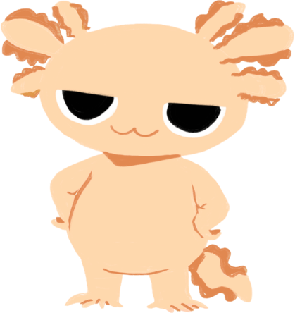

| Especie | Ajolote |
|---|---|
| Cumpleaños | 21 de Junio |
| Personalidad | Un poco testarudo y temperamental |
| Signo | Cáncer |
Muy audaz y carismático, es la definición de tu mejor amigo o tu peor enemigo", pero es el ajolote más leal que conocerás.
Es el más pequeño de los tres, pero con un corazón enorme.